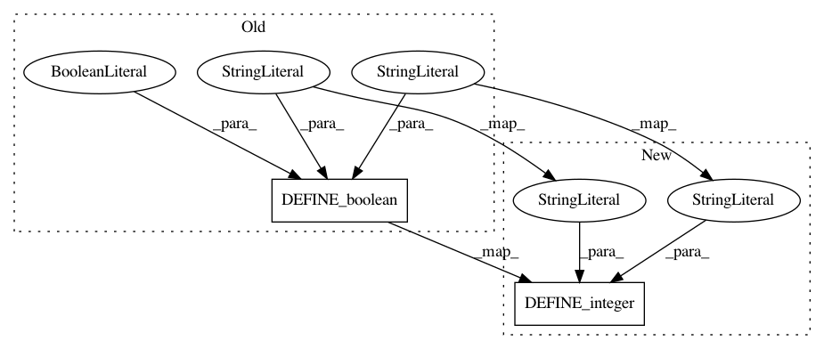

a9442319418b0d9b35f943ea5e58842ff682cd25,cloud_tpu/models/inception/inception_v2.py,,,#,34
Before Change
"learning_rate", default=0.1,
help="Learning rate.")
tf.flags.DEFINE_boolean(
"use_piecewise_rate_adaptation", default=True,
help="If true, learning rate is modified using piecewise table, "
"otherwise, exponential decay is used")
tf.flags.DEFINE_float(
"depth_multiplier", default=1.0,
help="Depth Multiplier on Inception")
After Change
"min_eval_interval", 180,
"Minimum number of seconds between evaluations")
tf.flags.DEFINE_integer(
"eval_timeout", None,
"Evaluation timeout: Maximum number of seconds that "
"may elapse while no new checkpoints are observed")
tf.flags.DEFINE_bool(
"use_tpu", True,
"Use TPUs rather than plain CPUs")
In pattern: SUPERPATTERN
Frequency: 4
Non-data size: 2
Instances
Project Name: tensorflow/tpu
Commit Name: a9442319418b0d9b35f943ea5e58842ff682cd25
Time: 2017-11-13
Author: frankchn@google.com
File Name: cloud_tpu/models/inception/inception_v2.py
Class Name:
Method Name:
Project Name: brightmart/text_classification
Commit Name: 9593d1e63672fb3e522b7629d32819bc8863eb83
Time: 2018-04-16
Author: test@testdeMacBook-Pro.local
File Name: a02_TextCNN/p7_TextCNN_train.py
Class Name:
Method Name:
Project Name: tensorflow/tpu
Commit Name: a9442319418b0d9b35f943ea5e58842ff682cd25
Time: 2017-11-13
Author: frankchn@google.com
File Name: cloud_tpu/models/inception/inception_v3.py
Class Name:
Method Name:
Project Name: calico/basenji
Commit Name: 6565e0419e9eeac6ac1deab3197eaf81872e0c88
Time: 2018-04-16
Author: drk@calicolabs.com
File Name: basenji/shared_flags.py
Class Name:
Method Name: